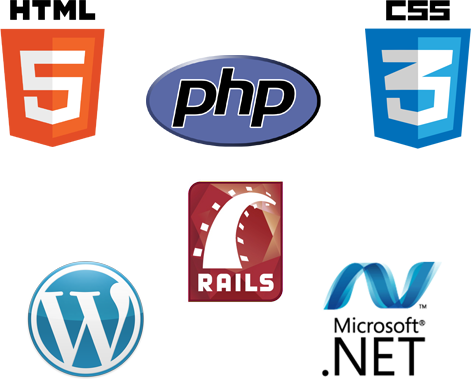

The Web Development AAS degree is intended for the student who is interested in designing and building commercial website applications. The program offers a variety of skills, technologies and current software tools. A student who completes this program will be able to evaluate, design and build a commercial website. They will be able to create the expected functionality of the website, including such e-commerce components as database-driven content, shopping carts and payment processing.
Web development tools and technologies are constantly changing. The courses will use current industry software based on current standards. Many of the upper-level courses in this program are designed to address the newest and developing technologies that are an expectation of this field.
Graduates of this program have a variety of employment opportunities. They may work with small to mid-sized firms that provide web development services. They may work with large corporations on corporate websites. This program also provides graduates with a set of skills that will allow them to work on their own as a contractor, or to start their own business venture.
